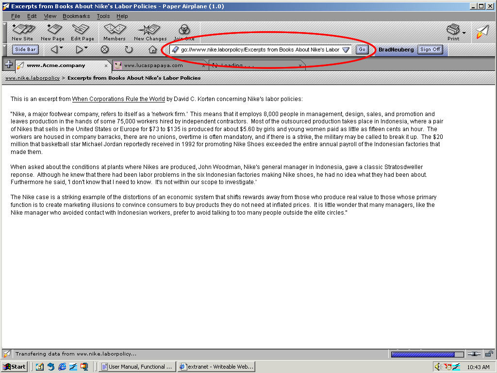
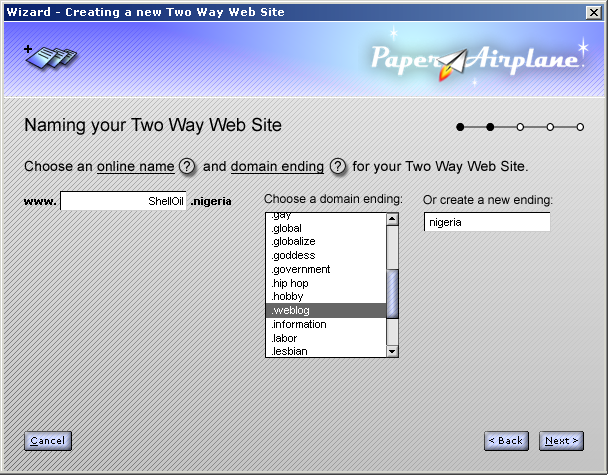

| | |
Table of Contents | Last | Next
Walkthrough - Seamless Collaboration
Domain Names are Dead, Long Live Domain Names!
You may be familiar with domain endings from the older World Wide Web, such as .com, .org, and .edu. This system is fraught with problems. It is beauracratic; the endings that are available are tightly restricted; creating and registering domain names is expensive and time-consuming; and the system itself is controlled by an un-accountable international organization. Paper Airplane leaves this system in place for older web sites, but replaces it for the new Two Way Web.
This improved domain name system, known as the Distributed Domain Name System (DisDNS), brings a host of new, easy to use capabilities to users. First, it now includes hundreds of endings. Here is a partial list of the endings you can now use for your Two Way Web Sites:
Want to create a Two Way Web Site named www.Nike.laborpolicy or www.Nike.sweatshops? Or how about www.Microsoft.antitrust? Maybe you want to share your online poetry community with the world at www.Poetry.community? User's can type these new domain endings right into their Paper Airplane browser to reach your Two Way Web Site:

Viewing a Nike Labor Policy Page
Even better, creating and using these new domain endings is perfectly free. Since this new DisDNS system is maintained across the machine's of other users like yourself using the Paper Airplane browser, no expensive centralized system like the root DNS servers is needed. This effectively reduces the cost of running the DisDNS system close enough to zero that it's cost is neglible, making it effectively free to create new domain names.
To create and name a new Two Way Web Site, simply press the New Site button. This will take you through the New Site Wizard. One of the screens allows you to choose a site name:

The Second Step of the New Site Wizard
To change the ending on your name, simply scroll through the available domain endings until you find one you want.
Choose from among the many available endings, or create your own new ending. In the example below someone is creating a new domain ending .nigeria, to create a Two Way Web Site that discusses Shell Oil's policies in Nigeria:

Create a New Domain Ending
For more in-depth information see Notes on the Distributed Domain Name System (DisDNS) and the full list of default domain endings.